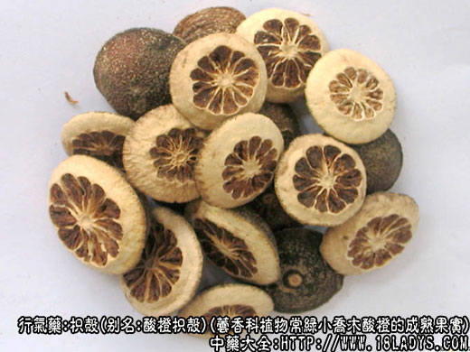
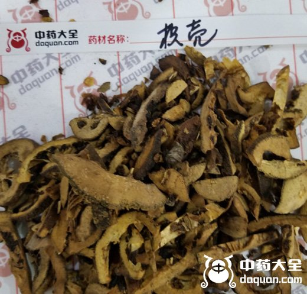

枳壳为常用中药。始载《开宝本草》，列入木部中品，《本草纲目》将枳实与枳壳合并，总称为枳，列入木部灌木类。
现市售商品的原植物与枳实同样繁杂，分布地区亦广，以往商品均以产地不同而分类，如川、江、湘、苏......，但这些枳壳的原植物并非单纯某一植物品栽培于某一地区，而是相互混杂。因此，以产地划分不能说明问题，只能从植物上加以区分，原植物主要有酸橙、香橼、代代花及枳四种。幼小的果实称为枳实，将成熟的果实成为枳壳。
1、酸橙枳壳
来源：见枳实。
产地：见枳实。
性状鉴别：果实圆球形，横切二半，直径2.8～5.5厘米，表面青绿色，绿褐色或棕褐色，有颗粒状突起和小凹点，果实顶端有明显的花柱痕迹，基部有小果柄或果柄脱落后的痕迹，切面果肉黄白色，光滑而稍隆起，厚约6～12毫米，边缘显凹入的油室。瓤囊9～12瓣，呈车轮状。果实中心柱坚实，质坚硬。气清香，味苦微酸。四川产者外皮细，略平滑，呈青绿色，果肉细腻色白；江西产者外皮略粗糙，绿褐色，果肉显粗，黄白色；湖南产者外皮粗糙棕褐色，果肉黄白色，显疏松（炕干者色绿肉白体结实，晒干者皮色较黄，体较松泡，肉厚）。
以个大，外皮青绿色，体结肉厚，色白，气清香者为佳。
2、香橼枳壳
来源：见枳实。
产地：主产江西、浙江等地。
性状鉴别：果实圆球形，横切两半，直径2.8～5厘米，表面褐色至棕褐色，略粗糙，散有多数的小油点，果实顶端有明显花柱基痕，其周围常有一个圆圈式的金钱环，基部有残留的果柄脱落的痕迹。切面果肉黄白哦，厚7～13毫米，边缘显凹入的油室，瓤囊10～12瓣，呈车轮状。果实中心柱坚实，气香味酸而后苦。
以个大，外皮绿褐色，肉厚色白，体结实者为佳。
3、代代花枳壳
别名：苏枳壳。
来源：芸香科植物常绿灌木或小乔木木代代花的将成熟果实。均为栽培。
产地：主产于江苏、浙江、广东、福建等地。
性状鉴别：果实呈圆球形，横切两半，直径约2.8～4.5厘米。表面灰黄色至暗绿棕色，密披多数凹下的小油点及网状隆起的皱纹，但较以上的两种的表面稍光滑，顶端有微突起的花柱基，基部有果柄残迹。切面果肉黄白色，平滑，厚约5～10毫米，略向外翻，中央有9～12瓣果瓤。气香，味苦辛。
以外皮绿棕色，肉厚黄白色，瓤小者为佳。
4、枳壳
别名：绿衣枳壳。
来源：同绿衣枳实。
产地：主产福建。
性状鉴别：基本上与绿衣枳实相同，本品较其它枳壳个小而肉薄，直径在2.5厘米以上者即为枳壳。
炮制：切片，麸炒。
性味：苦、酸、微寒。
归经：入脾、胃二经。
功能：破气消积，化痰除痞。
主治：食积痰滞不消，胸腹痞满胀痛，肝郁气滞，胁痛及下痢等症。
枳壳与枳实同种属，但为较成熟的果实。性味、成分与枳实同，所含橙皮甙不及枳实多。药理作用于枳实相同，但药力较和缓，故体弱者一般用枳壳而不用枳实。又在消食破积，治消化不良时，多用枳实，而行气宽中，则多用枳壳。
临床应用：1、用于治胸胁胀痛。如属肝气郁结引起者，可在逍遥散基础上酌加枳壳、厚朴、大腹皮等；如属由跌打损伤而致气滞血瘀引起者，则配归尾、桃仁、红花等，方如行气活血汤，处方：枳壳6g，木香2.4g（后下），砂仁3g，厚朴6g，香附3g，赤芍9g，归尾9g，桃仁6g，红花4.5，苏木6g，水煎服，或水酒各半煎服。
2、用于治疗产后子宫脱垂，或久泻脱肛，以枳壳15g，水煎服，或以枳壳9g，配补中益气药物，连服7～10天，或更长时间，方如枳壳益气汤，处方：炒枳壳18g，黄芪30g，党参15g，白术12g，升麻6g，陈皮4.5g，当归9g，益母草15g，炙甘草6g，水煎服。
3、用于治疗呕逆咳嗽。属咳嗽者，配木香、鸡血藤、黄芪等，可和胃降逆；属肺气壅滞而咳嗽者（如肺气肿喘嗽），可在应用苏子、半夏、陈皮的基础上，再加枳壳行气宽中。
此外，前人经验认为枳壳还有祛风作用。用于眼科，能祛风明目，治风热眼病（急性结膜炎）时，可配防风、荆芥、黄芩、连翘等祛风清热药同用；也用于治肌肤麻木痛痒（由风邪入侵肌肤引起），但原理尚待进一步研究。
又长期服用熟地、阿胶等补药时，为防其过于滋腻引起胸膈滞闷，影响消化功能，可加入枳壳少许。
常用量：3～9g，但用于治子宫脱垂，须用至15～30g。
注：1、除上述四种枳壳外，尚有云南、贵州、福建产销的甜橙等柑果类枳壳统称为什果枳壳。
2、代代花枳壳：是酸橙的变种，故商品性状两者区分不大。
3、枳壳（实）：在经营你个过程中习惯以产地进行划分，如产于四川省者称川枳壳；产于江西省称江枳壳；产江苏、浙江者称苏枳壳。但也有商品划分的如绿衣枳壳，各地产品因原植物品种不同，或地区的土壤采摘时间以及加工方法不同，商品略有差异，如川、江、湘枳壳主要植物来源都是酸橙，但川枳壳皮色绿褐而细，肉坚实而细腻；湘枳壳皮色棕褐而粗，肉较粗而虚；江枳壳却介于两者之间；苏枳壳主要植物来源是代代和香橼的果实，品质和湘枳壳类似，但有时时间较晚，枳壳个稍大，皮黄色，肉薄或厚而虚泡，则品质下降。习惯认为川枳壳最好，江枳壳第二，湘枳壳第三，苏枳壳第四，什果枳壳最次，绿衣枳壳则有习销与不习销的情况存在。